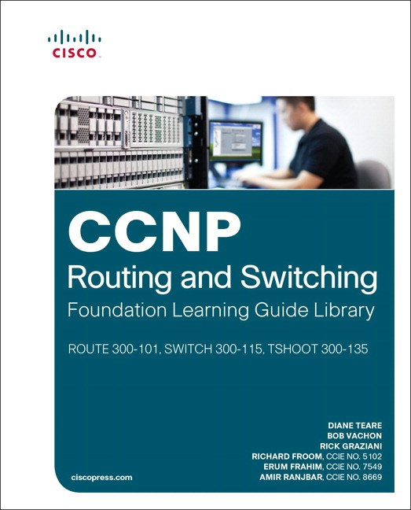
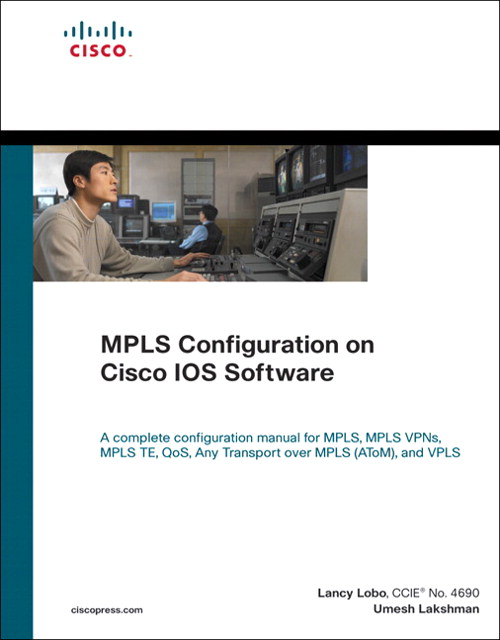
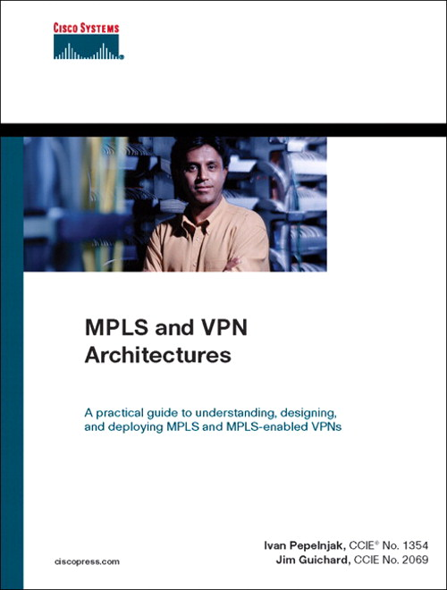

Sinopse CCNP Routing and Switching TSHOOT 300-135 Official Cert Guide from Cisco Press allows you to succeed on the exam the first time and is the only self-study resource approvedby Cisco. Expert instructor Raymond Lacoste shares preparation hints and test-taking tips, helping you identify areas of weakness and improve both your conceptual knowledge and hands-on skills. This complete, official study package includes A test-preparation routine proven to help you pass the exam Do I Know This Already? quizzes, which allow you to decide how much time you need to spend on each section Chapter-ending exercises, which help you drill on key concepts you must know thoroughly The powerful Pearson IT Certification Practice Test software, complete with hundreds of exam-realistic questions, customization options, and detailed performance reports More than 60 minutes of personal video mentoring from the author on important exam strategies A trouble ticket chapter that explores ten additional network failures and the approaches you can take to resolve the issues presented A final preparation chapter, which guides you through tools and resources to help you craft your review and test-taking strategies Study plan suggestions and templates to help you organize and optimize your study time Well-regarded for its level of detail, study plans, assessment features, challenging review questions and exercises, this official study guide helps you master the concepts and techniques that ensure your exam success. CCNP Routing and Switching TSHOOT 300-135 Official Cert Guide is part of a recommended learning path from Cisco that includes simulation and hands-on training from authorized Cisco Learning Partners and self-study products from Cisco Press. To find out more about instructor-led training, e-learning, and hands-on instruction offered by authorized Cisco Learning Partners worldwide, please visit www.cisco.com. The official study guide helps you master topics on the CCNP Routing and Switching TSHOOT 300-135 exam, including how to troubleshoot: Device performance VLANs, Trunks, and VTP STP and Layer 2 Etherchannel Inter-VLAN routing and Layer 3 Etherchannel Switch security HSRP, VRRP, GLBP IPv4 and IPv6 addressing IPv4/IPv6 routing and GRE tunnels RIPv2, RIPng, EIGRP, and OSPF Route maps, policy-based routing, and route redistribution BGP Management protocols, tools, and access Companion CD-ROM The CD-ROM contains more than 200 practice questions for the exam, memory table exercises and answer keys, a study planner tool, and more than 60 minutes of video. Includes Exclusive Offer for 70% Off Premium Edition eBook and Practice Test Pearson IT Certification Practice Test minimum system requirements: Windows Vista (SP2), Windows 7, or Windows 8.1; Microsoft .NET Framework 4.5 Client; Pentium class 1GHz processor (or equivalent); 512 MB RAM; 650 MB disc space plus 50 MB for each downloaded practice exam; access to the Internet to register and download exam databases
resumo do livro CCNP Routing and Switching TSHOOT 300-135 Official Cert Guide from Cisco Press allows you to succeed on the exam the first time and is the only self-study resource approvedby Cisco. Expert instructor Raymond Lacoste shares preparation hints and test-taking tips, helping you identify areas of weakness and improve both your conceptual knowledge and hands-on skills.
Dados técnicos
Data de publicação:Dec 20 2014
Editora:Cisco Press
Autor:Raymind Lacste
Número de páginas:1024
clique aqui para ter acesso ao conteúdo

Sinopse A comprehensive introduction to all facets of MPLS theory and practice Helps networking professionals choose the suitable MPLS application and design for their network Provides MPLS theory and relates to basic IOS configuration examples The Fundamentals Series from Cisco Press launches the basis to readers for understanding the purpose, application, and management of technologies MPLS has emerged as the new networking layer for service providers throughout the world. For many service providers and enterprises MPLS is a way of delivering new applications on their IP networks, while consolidating data and voice networks. MPLS has grown to be the new default network layer for service providers and is finding its way into enterprise networks as well. This book focuses on the building blocks of MPLS (architecture, forwarding packets, LDP, MPLS and QoS, CEF, etc.). This book also reviews the different MPLS applications (MPLS VPN, MPLS Traffic Engineering, Carrying IPv6 over MPLS, AToM, VPLS, MPLS OAMetc.).You will get a comprehensive overview of all the aspects of MPLS, including the building blocks, its applications, troubleshooting and a perspective on the future of MPLS.
resumo livro
Dados técnicos
Data de publicação:Dec 01 2006
Editora:Cisco Press
Autor: Luc De Ghein
Número de páginas:672
clique aqui para ter acesso ao conteúdo

Sinopse : A practical guide to understanding, designing, and deploying MPLS and MPLS-enabled VPNs In-depth analysis of the Multiprotocol Label Switching (MPLS) architecture Detailed discussion of the mechanisms and features that constitute the architecture Learn how MPLS scales to support tens of thousands of VPNs Extensive case studies guide you through the design and deployment of real-world MPLS/VPN networks Configuration examples and guidelines assist in configuring MPLS on Cisco devices Design and implementation options help you build various VPN topologies Multiprotocol Label Switching (MPLS) is an innovative technique for high-performance packet forwarding. There are many uses for this new technology, both within a service-provider environment and within the enterprise network, and the most widely deployed usage today is the enabling of Virtual Private Networks (VPNs). With the introduction of MPLS-enabled VPNs, network designers are able to better scale their networks than with the methods available in the past. Network engineers and administrators need quick, effective education on this technology to efficiently deploy MPLS-enabled VPNs within their networks. With that goal in mind, MPLS and VPN Architectures provides an in-depth discussion particular to Cisco's MPLS architecture. This book covers MPLS theory and configuration, network design issues, and case studies as well as one major MPLS application: MPLS-based VPNs. The MPLS/VPN architecture and all its mechanisms are explained with configuration examples, suggested design and deployment guidelines, and extensive case studies. MPLS and VPN Architectures is your practical guide to understanding, designing, and deploying MPLS and MPLS-based VPNs.
resumo livro
Dados técnicos
Data de publicação:Oct 31 2000
Editora:Cisco Press
Autor: Jim Guichard
Número de páginas:432
clique aqui para ter acesso ao conteúdo